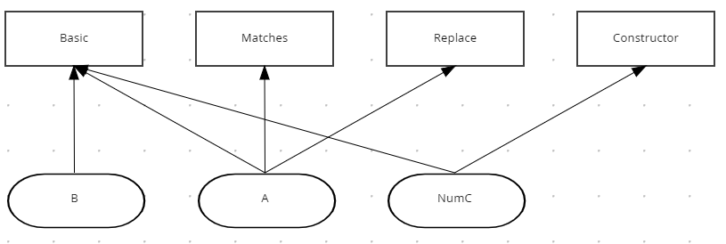
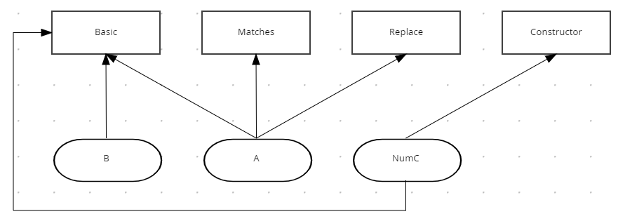

Bend-points and the DMN Editor
We’ve been working in DMN Editor to improve its user experience. We know that our users sometimes have models with many edges that overlap nodes, other edges and are hard to arrange.
Even with features like the multiple DRDs that help users on organizing the content, there are still some cases where users cannot or don’t want to split the diagram. But how can they deal with this?

Users may connect the "NumC" and the "Basic" nodes, but is this the best way to organize the nodes? A simple solution is already available in the BPMN editor, and now implemented in the DMN editor relies on the use of bend-points for this kind of scenario.
This feature enables users to create "flexible edges". It may be easier to reshape the edge by going around the other edges with this feature instead of rearranging the nodes, so that the edges do not overlap.

Preventing the pain
The BPMN and the DMN editors rely on the same core diagram system, each of them with specific features for each use case.
The beautiful thing is that when the BPMN introduced bend-points, we had in mind that it would be supported for DMN at some point too, so it was built in a way that it was decoupled from the BPMN editor, envisioning re-usability in other places than BPMN.
So, on DMN, we have an Edge with a list of waypoints but only filled with two points: the source and the target node. Newcomers may think that developers from the past were doing bad coding using a list for keeping only two points, but it was made this way, keeping in mind the bend-points.
So, when we finally enabled the bend-points, the DMN editor structure was ready to handle Edges of lists of waypoints.
I like to point to this case and show how we, as developers, may keep our code ready for expansions, especially if it is a new feature that we already have on our radar like this one. It saves time for people from the future who maybe are ourselves.
The support for bend-points will be available in the next Kogito release. Stay tuned!